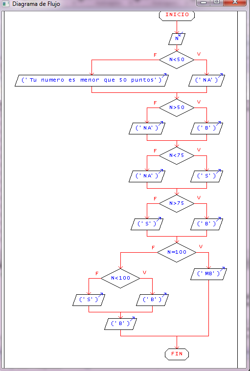
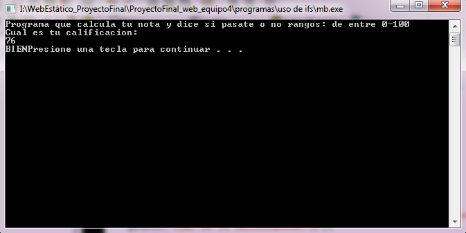

PROBLEMA #9
Crear un programa que lea una calificación numérica,
la transforme en notas alfabéticas, dependiendo la calificación numerica, siendo los valores los siguientes, INSUFICIENTE (0-59),
SUFICIENTE (60-75), BIEN (75-85)MUY BIEN (85-100)
Análisis
Planteamiento de la solución:
Se pretende crear un programa con condicional If, que lea una calificación numérica entre 0 y 100 introducida por el ususario,
y la transformarla en una de las siguientes notas alfabéticas:
INSUFICIENTE (0-59)
SUFICIENTE (60-75)
BIEN (75-85)
MUY BIEN (85-100)
Pseudocódigo
Proceso notas
Leer n;
Si n<50 Entonces
Escribir ("NA");
Sino
Escribir ("Tu numero es menor que 50 puntos");
FinSi
Si n>50 Entonces
Escribir ("B");
Sino
Escribir ("NA");
FinSi
Si n<75 Entonces
Escribir ("S");
Sino
Escribir ("NA");
FinSi
Si n>75 Entonces
Escribir ("B");
Sino
Escribir ("S");
FinSi
Si n=100 Entonces
Escribir ("MB");
Sino
Si n<100 Entonces
Escribir ("B");
Sino
Escribir ("S")
FinSi
Escribir ("B");
FinSi
FinProceso
Diagrama de Flujo

Código en Lenguaje C
Este programa muestra la seleccion de notas entre 1-100.
Clasifica las notas según el puntaje.
#include <stdio.h>
int main()
{
int nota;
printf("Programa que calcula tu nota y dice si pasate o no rangos: de entre 0-100\n");
printf("Cual es tu calificacion:\n");
scanf("%d",& nota);
if(nota<50){
printf("INSUFICIENTE");
}
else
if(nota<75){
printf("SUFICIENTE");
}
else
if(nota <85){
printf("BIEN");
}
else
printf("MUYBIEN");
return 1;
}
Salida del programa

|Inicio|
|Volver Arriba|